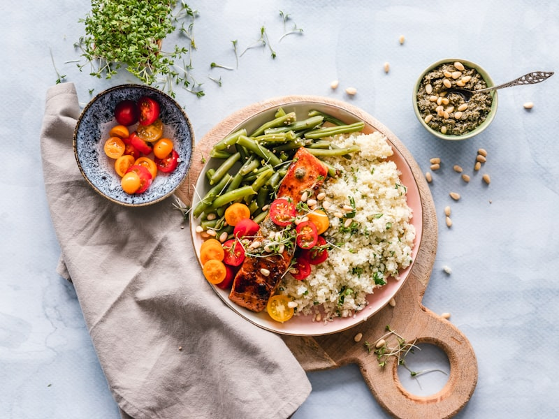
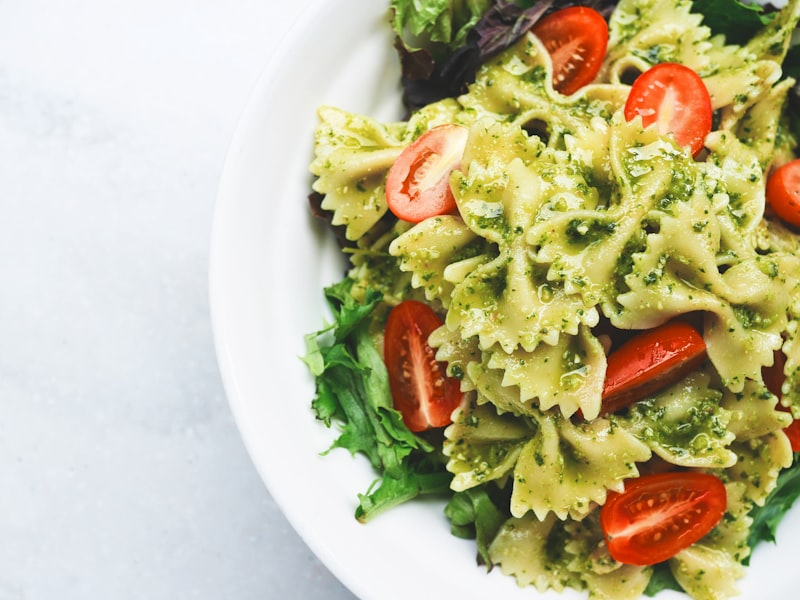
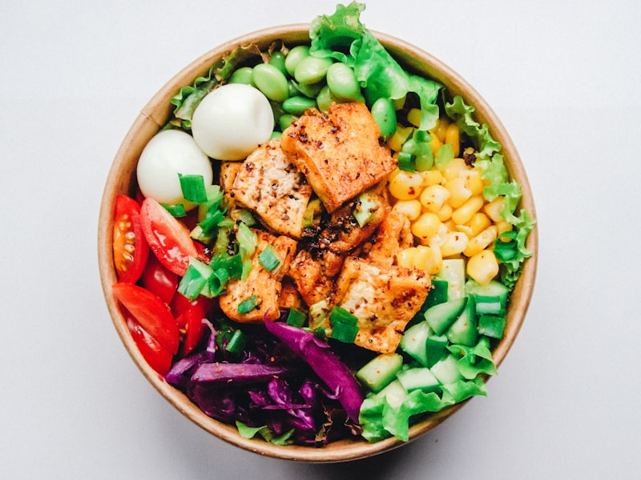
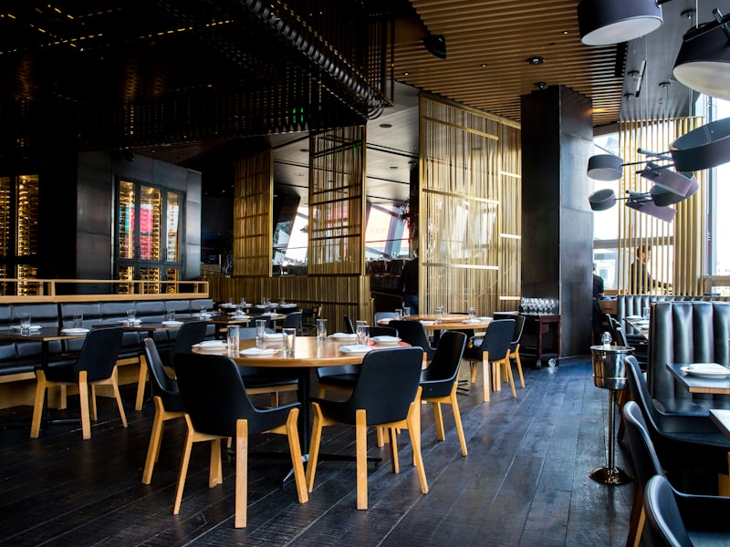

A Passion for Flavor,
A Gift for Detail.
Chef Marissa Mueller is a traveling private chef based in Miami Beach, FL — known for curating unforgettable dining experiences that blend artistry with precision. Her philosophy: every meal is a personal act of hospitality, whether prepared for two or twenty.
From multi-day culinary residencies at private estates to recurring weekly service and exclusive event catering, Marissa delivers with discretion, creativity, and an unwavering commitment to excellence.
Curated Culinary Services
Traveling Private Chef
Available anywhere in the US and internationally. Ideal for vacation homes, yachts, private retreats, and destination events requiring premium culinary leadership.
In-Home Personal Chef
Weekly or recurring household meal service tailored to your dietary preferences and lifestyle — fresh, house-made food prepared, plated, and cleaned up seamlessly.
Private Event Catering
From intimate dinner parties to exclusive corporate gatherings, custom menus crafted to transform your event into a sensory occasion guests will long remember.
A Taste of the Work






What They Say
Marissa delivered a seven-course tasting menu at our home in the Keys that rivaled any Michelin-starred restaurant. Absolute perfection from concept to plate.
We hired Chef Marissa for a two-week stay in Aspen. Her ability to adapt to our dietary needs while producing stunning, flavorful meals every day was remarkable.
The dinner party Marissa catered was the talk of our circle for months. Sophisticated, personal, and executed flawlessly — she is truly a rare talent.
Reserve Your Experience
Available for inquiries always. Whether planning a week-long culinary stay or an intimate dinner for six — reach out and let’s create something extraordinary.